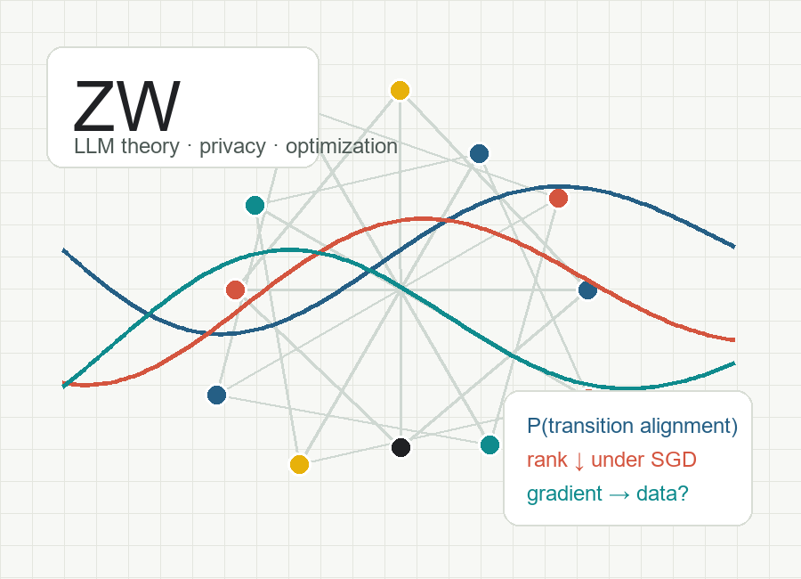

Understanding chain-of-thought from a Markovian perspective
Models multi-step reasoning traces as a Markov process and studies transition alignment as a structural condition under which chain-of-thought reduces inference-time sampling cost.
Courant Institute of Mathematical Sciences, NYU
I am a Ph.D. student in Mathematics at the Courant Institute of Mathematical Sciences, New York University, advised by Qi Lei. My research studies large language models and deep learning from a theoretical perspective, with recent focus on chain-of-thought reasoning, self-improving generation models, optimization dynamics, and privacy in machine learning. I am also interested in AI for mathematics.

I work on theoretical foundations for modern learning systems: when reasoning traces help, how models can improve through closed-loop training, why optimization dynamics favor certain structures, and how gradients can leak private training data.
Models multi-step reasoning traces as a Markov process and studies transition alignment as a structural condition under which chain-of-thought reduces inference-time sampling cost.
Develops closed-loop training with model-generated data, verifier-guided selection, and weighting, with experiments comparing off-policy and on-policy self-improvement updates.
Studies softmax-router mixture-of-experts training via martingale arguments and dynamical-system style analysis of inner-loop and outer-loop convergence.
An asterisk denotes alphabetical author order.
arXiv, 2026
Identifies transition alignment as a key determinant of when chain-of-thought prompting improves sample efficiency, and validates the theory with controlled synthetic benchmarks.
AISTATS, 2025
Recasts data reconstruction as an inverse problem, derives matching reconstruction-error bounds for two-layer networks, and proposes a utility-matched evaluation protocol.
ICLR, 2024 Spotlight
Shows how stochastic gradient dynamics can move from higher-rank minima to lower-rank minima in regularized deep linear networks, while reverse jumps have probability zero.
AISTATS, 2023
Proves that a single model-gradient query at random initialization can identify training samples under broad neural network assumptions, with an efficient tensor-decomposition reconstruction algorithm.
Reviewer for ICLR, ICML, NeurIPS, and AISTATS.